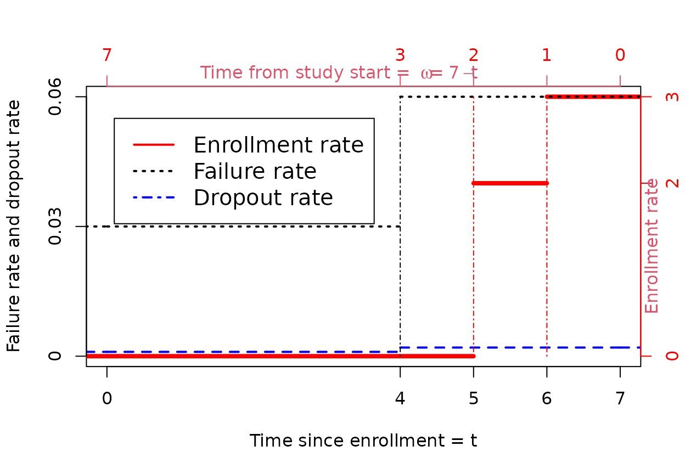

Computing expected events by interval at risk
Source:vignettes/story_compute_expected_events.Rmd
story_compute_expected_events.RmdIntroduction
This document derives an algorithm for computing expected events observed for a model with piecewise constant enrollment, failure and dropout rates similar to Lachin and Foulkes (1986). Specifically, we design this to enable computation of an average hazard ratio which we will use elsewhere to approximate sample size for fixed or group sequential designs under a non-proportional hazards assumption (Kalbfleisch and Prentice (1981), Schemper, Wakounig, and Heinze (2009)). The expected events calculation outlined here is implemented in the function eEvents_df().
General formulation and notation
For notation, the study time scale will denoted with \(\omega\) with the study start first opening for enrollment at \(\omega=0\). We will use the variable \(t\) to indicate patient time with \(t=0\) representing the time a patient is enrolled. We assume the patient time from enrollment to an event is independent and identically distributed for all subjects enrolled. We also assume the patient time of censoring is independent and identically distributed for all subjects enrolled. For an individual, let \(X>0\) denote the patient time until an event and \(Y>0\) denote the patient time until loss-to-follow-up. We also let \(U\) denote the (independent) study time of entry for the patient. We assume the triplet \(X\), \(Y\), \(U\) are independent.
We will consider a single treatment group and stratum and assume subjects enroll according to a Poisson process with entry rate \(g(\omega)\geq 0\) for \(0\le \omega\). The expected number of subjects enrolled by study time \(\omega\) is simply
\[\begin{equation} G(\omega)=\int_0^\omega g(u)du. \end{equation}\]
Analysis of time-to-event data is done using the time from enrollment until the patient has an event, drops out, or is censored prior having an event at the time of a data cutoff; we will consider the data cutoff to be fixed at time \(\Omega\). The key counts we consider here is:
- \(\bar{N}(t)\) : the number of patients with events at or before being on study for at least a duration \(0<t \le \Omega\) at time of data cutoff at study time \(\Omega\).
- \(\bar{n}(t_1,t_2)\equiv E\{\bar{N}(t_2)-\bar{N}(t_1)\}\) : the number of patients with events in the interval \((t_1,t_2]\), \(0\le t_1< t_2\le \Omega\).
We will focus on the the expected value of \(\bar{n}(t_1,t_2)\) due to its usefulness in computing an average hazard ratio under the piecewise model outlined below. For a patient to be in the count \(\bar{n}(t_1,t_2)\) they must be enrolled prior to time \(\Omega - t_1\). Also, for a patient enrolled at time \(0<u<\Omega\) the maximum time they would be observed for occurrence of an event would be \(\Omega - u\). Thus, \[\begin{align} E\{\bar{n}(t_1,t_2)\}&=\int_0^{\Omega-{t_1}} g(u) P\{t_1<X\leq \min(t_2,\Omega-u), X\leq Y\} du\nonumber\\ &=\int_0^{\Omega-t_2} g(u) P\{t_1<X\leq t_2, X\leq Y\} du+ \int_{\Omega-t_2}^{\Omega-t_1} g(u) P\{t_1< X\leq \Omega-u, X\leq Y\} du\nonumber\\ &=G(\Omega-t_2)P\{t_1<X\leq t_2, X\leq Y\}+ \int_{\Omega-t_2}^{\Omega-t_1} g(u) P\{t_1< X\leq \Omega-u, X\leq Y\} du.\nonumber \end{align}\]
The piecewise model
The model here is as follows:
- Piecewise constant enrollment rates are allowed given that the enrollment rate often accelerates early in the trial.
- Piecewise exponential failure rates are allowed to allow changing outcome incidence over time.
- Piecewise exponential censoring rates allow changing dropout rates over time.
- A fixed study duration.
Lachin and Foulkes (1986) have provided a general formulation for calculating the expected number of events over time in the scenario described above. However, we alter their algorithm to compute the expected number of events \(E\{\bar n(t_1,t_2)\}\) in each follow-up period with a constant failure rate; this will later enable computing an average hazard ratio (Kalbfleisch and Prentice (1981), Schemper, Wakounig, and Heinze (2009)).
We define a piecewise time-to-event and dropout random variables on the patient time scale. We assume \(0=t_0<t_1<...<t_M=\infty\) and for \(m=1,2,\ldots,M\). For \(m=1,2,\ldots,M\), we assume \(X_m>0\), \(Y_m>0\) are random variables that are independent of the study entry time \(U\). We let \(X_m\) and \(Y_m\) define \(X\) and \(Y\), respectively, on the interval \((t_{m-1},t_m]\), \(m=1,2,\ldots,M\), as follows:
\[\begin{align} X&=\sum_{m=1}^M \min(X_m,t_m-t_{m-1}) \prod_{j=1}^{m-1}I\{X_j>t_j-t_{j-1}\}\label{eq:Xdef}\\ Y&=\sum_{m=1}^M \min(Y_m,t_m-t_{m-1})\prod_{j=1}^{m-1}I\{Y_j>t_j-t_{j-1}\}\label{eq:Ydef}. \end{align}\]
Here assume that \(X_m\) and \(Y_m\) are independent and exponentially distributed with failure rates \(\lambda_m\) and \(\eta_m\), respectively, \(m=1,2,\ldots,M\).
We now assume subjects enroll at a constant rate in each of \(J\) intervals defined by \(0=\omega_0<\omega_1<\ldots<\omega_J<\infty\). We denote the enrollment rates by
\[\begin{equation}g(\omega)=\gamma_j\geq 0\label{eq:gj}\end{equation}\] for \(\omega\) in the interval \((\omega_{j-1},\omega_j]\), \(j=0,1,2,\ldots,J\). We assume \(\gamma_1>0\), but for \(j>1\) we assume \(\gamma_j\ge 0\). Letting \(G_0=0\) we recursively define for \(j=1,\ldots,J\)
\[\begin{equation}G_j=G(\omega_j)=G_{j-1}+\gamma_j(\omega_j-\omega_{j-1})\label{eq:Gj}\end{equation}\] and thus for \(\omega\in [\omega_{j-1},\omega_j]\) that the expected enrollment by study time \(\omega\) is \[\begin{equation}G(\omega)=G_{j-1}+\gamma_j(\omega-\omega_{j-1}).\label{eq:ENpw}\end{equation}\]
An example under the piecewise model
We consider an example of this piecewise model assuming \(J=3\), \(\omega_j=1,2,7\) and \(\gamma_j=3,2,0\) for \(j=1,2,3\). We assume \(M=2\) with \(t_m=4,\infty\), failure rates \(\lambda_m=.03,.06\), and dropout rates \(\eta_m=0.001,.002\). We plot all of these in the following plot with the enrollment rate axis on the right and the failure and dropout rate axis on the left. We plot \(\omega\) in reverse order which is related to the integration in the equation for \(E\{\bar{n}(t_1,t_2)\}\) above. We have also plotted a vertical dot-dashed line at each point where either the enrollment rate or a failure (and dropout) rate changes.

Organizing calculations under the piecewise model
We now proceed to define algorithms for computing expected events observed in an interval for the model with piecewise constant enrollment, failure rates, and dropout rates. We assume study duration is \(\Omega=t_M\). We assume without loss of generality a sequence \(t_m\), \(m=1,2,\ldots, M\) such that there is a constant failure rate \(\lambda_m\) and dropout rate \(\eta_m\) in the interval \((t_{m-1},t_m]\) as well as a constant enrollment rate \(\gamma_m\) in the interval \((t_M-t_m,t_M-t_{m-1}]\). Deriving the intervals is relatively a straightforward exercise as shown in the example above. For example, for the example above, the change points are where the vertical lines are drawn and we have the following scenario for calculation purposes.
| \(m\) | \(t_m\) | \(\lambda_m\) | \(\eta_m\) | \(j\) | \(\omega_j\) | \(\gamma_j\) |
|---|---|---|---|---|---|---|
| 1 | 4 | 0.03 | 0.001 | 4 | 7 | 0 |
| 2 | 5 | 0.06 | 0.002 | 3 | 3 | 0 |
| 3 | 6 | 0.06 | 0.002 | 2 | 2 | 2 |
| 4 | 7 | 0.06 | 0.002 | 1 | 1 | 3 |
We define for \(m=1,\ldots,M\) intermediate probability calculations for use in calculating \(\bar n(t_{m-1},t_m)\) as follows:
\[\begin{align} q_m&=P\{\min(X_m,Y_m)>t_m-t_{m-1}\}=\exp^{-(\lambda_m+\eta_m)(t_m-t_{m-1})} \label{eq:qm}\\ Q_m&=P\{\min(X,Y)>t_m\}=\prod_{j=1}^m q_j\label{eq:Qm}\\ d_m&=P\{t_{m-1}<X\le t_m,X\le Y\}\\ &=P\{\min(X,Y)>t_{m-1}\}\cdot P\{0<\min (X_m,Y_m)\le t_m-t_{m-1},X_m\le Y_m\}\\ &=P\{\min(X,Y)>t_{m-1}\}\cdot P\{0<\min (X_m,Y_m)\le t_m-t_{m-1}\}\cdot P\{X_m\le Y_m|0<\min (X_m,Y_m)\le t_m-t_{m-1}\}\\ &=Q_{m-1}(1-e^{-(\lambda_m+\eta_m)(t_m-t_{m-1})}) \frac{\lambda_m}{\lambda_m+\eta_m}\\ \bar n_m&=E\{\bar n(t_{m-1},t_m)\} \end{align}\] Note that if \(\lambda_m+\eta_m=0\), we have \(d_m=0\).
From above, we have
\[\begin{align} \bar n_m&=G(t_M-t_m)P\{t_{m-1}<X\leq t_m, X\leq Y\}+ \int_{t_M-t_m}^{t_M-t_{m-1}} g(u) P\{t_{m-1}< X\leq t_M-u, X\leq Y\} du\\ &=G_{M+1-m}d_m+P\{\min(X,Y)>t_{m-1}\} \int_0^{t_m-t_{m-1}}g_{M+1-m}P\{X_m\le v, X_m\le Y_m\}dv\\ &=G_{M+1-m}d_m + \frac{Q_{m-1}g_{M+1-m}\lambda_m}{\lambda_m+\eta_m} \int_0^{t_m-t_{m-1}}\left(1-\exp^{-(\lambda_m+\eta_m)v}\right)dv\\ &=G_{M+1-m}d_m + \frac{Q_{m-1}g_{M+1-m}\lambda_m}{\lambda_m+\eta_m} \left(t_m-t_{m-1}-\frac{1-\exp^{-(\lambda_m+\eta_m)(t_m-t_{m-1})}}{\lambda_m+\eta_m}\right)\\ &=G_{M+1-m}d_m + \frac{Q_{m-1}g_{M+1-m}\lambda_m}{\lambda_m+\eta_m} \left(t_m-t_{m-1}-\frac{1-q_m}{\lambda_m+\eta_m}\right) \end{align}\]
We now add \(q_m\), \(Q_m\), and \(d_m\) to the calculations above to enable computation of \(\bar n_m\), the expected events in each time interval.
namesTem <- names(x)
names(x) <- c("m", "tm", "lambda", "eta", "j", "omega", "gamma")
y <- x %>%
mutate(
tdel = tm - lag(tm, default = 0),
q = exp(-(lambda + eta) * tdel),
Q = lag(cumprod(q), default = 1),
d = Q * (1 - q) * lambda / (lambda + eta),
G = c(5, 5, 3, 0),
nbar = G * d + (lambda * Q * gamma) / (lambda + eta) * (tdel - (1 - q) / (lambda + eta)))
yy <- y
names(yy) <- c(
"$m$", "$t_m$", "$\\lambda_m$", "$\\eta_m$", "$j$",
"$\\omega_j=t_M-t_{m-1}$",
"$\\gamma_j$", "$t_m-t_{m-1}$", "$q_m$", "$Q_{m-1}$",
"$d_m$", "$G_{j-1}$", "$\\bar{n}_m$"
)
yy <- yy %>% select(c(1:7, 12, 8:11, 13))
yy %>%
kable(digits = 4) %>%
kable_styling(c("striped", "bordered")) %>%
add_header_above(c(
"Failure and dropout rates" = 4,
"Enrollment" = 4,
"Events by time period" = 5))| \(m\) | \(t_m\) | \(\lambda_m\) | \(\eta_m\) | \(j\) | \(\omega_j=t_M-t_{m-1}\) | \(\gamma_j\) | \(G_{j-1}\) | \(t_m-t_{m-1}\) | \(q_m\) | \(Q_{m-1}\) | \(d_m\) | \(\bar{n}_m\) |
|---|---|---|---|---|---|---|---|---|---|---|---|---|
| 1 | 4 | 0.03 | 0.001 | 4 | 7 | 0 | 5 | 4 | 0.8834 | 1.0000 | 0.1129 | 0.5643 |
| 2 | 5 | 0.06 | 0.002 | 3 | 3 | 0 | 5 | 1 | 0.9399 | 0.8834 | 0.0514 | 0.2570 |
| 3 | 6 | 0.06 | 0.002 | 2 | 2 | 2 | 3 | 1 | 0.9399 | 0.8303 | 0.0483 | 0.1937 |
| 4 | 7 | 0.06 | 0.002 | 1 | 1 | 3 | 0 | 1 | 0.9399 | 0.7804 | 0.0454 | 0.0688 |
Verifying calculations
We check the above for the total number of events using the gsDesign function eEvents(). First, we sum the \(\bar{n}_m\) values sum(y$nbar) to get 1.083773 and compare to:
Events <- gsDesign::eEvents(
lambda = y$lambda,
eta = y$eta,
gamma = y$gamma[length(y$gamma):1],
S = y$tdel[1:(length(y$tdel) - 1)],
R = y$tdel[(length(y$tdel):1)],
T = max(y$tm))$d
Events
#> [1] 1.083773Next, we examine by the periods defined by failRates:
eEvents_df(
enrollRates = tibble(duration = c(1, 1), rate = c(3, 2)),
failRates = tibble(duration = c(4, 3), failRate = c(.03, .06), dropoutRate = c(.001, .002)),
totalDuration = 7,
simple = FALSE)
#> # A tibble: 2 × 3
#> t failRate Events
#> <dbl> <dbl> <dbl>
#> 1 0 0.03 0.564
#> 2 4 0.06 0.519Now we group rows of y above into these same intervals.
y %>%
mutate(t = c(0, 4, 4, 4)) %>%
group_by(t) %>%
summarise(
failRate = first(lambda),
Events = sum(nbar))
#> # A tibble: 2 × 3
#> t failRate Events
#> <dbl> <dbl> <dbl>
#> 1 0 0.03 0.564
#> 2 4 0.06 0.519Finally, we approximate specific numbers using simulation. First, we simulate a large dataset and confirm the simulation has the targeted enrollment pattern.
nsim <- 1e6
xx <- simtrial::simPWSurv(
n = nsim,
block = (rep("xx", 4)),
enrollRates = tibble(rate = c(3, 2) * nsim / 5, duration = c(1, 1)),
failRates = tibble(
Stratum = "All", period = 1:2, Treatment = "xx",
rate = c(.03, .06), duration = c(4, Inf)
),
dropoutRates = tibble(
Stratum = "All", period = 1:2, Treatment = "xx",
rate = c(.001, .002), duration = c(4, Inf)
))
save(xx, file = "./fixtures/compute_expected_events.Rdata")
load("./fixtures/compute_expected_events.Rdata")
ecat <- 1 + (xx$enrollTime > 1) + (xx$enrollTime > 2)
cat("Enrollment pattern: ", table(ecat) / nsim)
#> Enrollment pattern: 0.599697 0.399995 0.000308Now we confirm the expected events in each follow-up interval given the targeted enrollment.
yy <- xx %>%
simtrial::cutData(7) %>%
filter(event == 1) %>%
mutate(tcat = 4 + (tte > 4) + (tte > 5) + (tte > 6))
cat("Event by interval: ", table(yy$tcat) / nsim * 5, "\n")
#> Event by interval: 0.56421 0.2591 0.19403 0.067865
cat("Total events: ", sum(yy$event) / nsim * 5)
#> Total events: 1.085205References
Kalbfleisch, John D, and Ross L Prentice. 1981. “Estimation of the Average Hazard Ratio.” Biometrika 68 (1): 105–12.
Lachin, John M., and Mary A. Foulkes. 1986. “Evaluation of Sample Size and Power for Analyses of Survival with Allowance for Nonuniform Patient Entry, Losses to Follow-up, Noncompliance, and Stratification.” Biometrics 42: 507–19.
Schemper, Michael, Samo Wakounig, and Georg Heinze. 2009. “The Estimation of Average Hazard Ratios by Weighted Cox Regression.” Statistics in Medicine 28 (19): 2473–89.